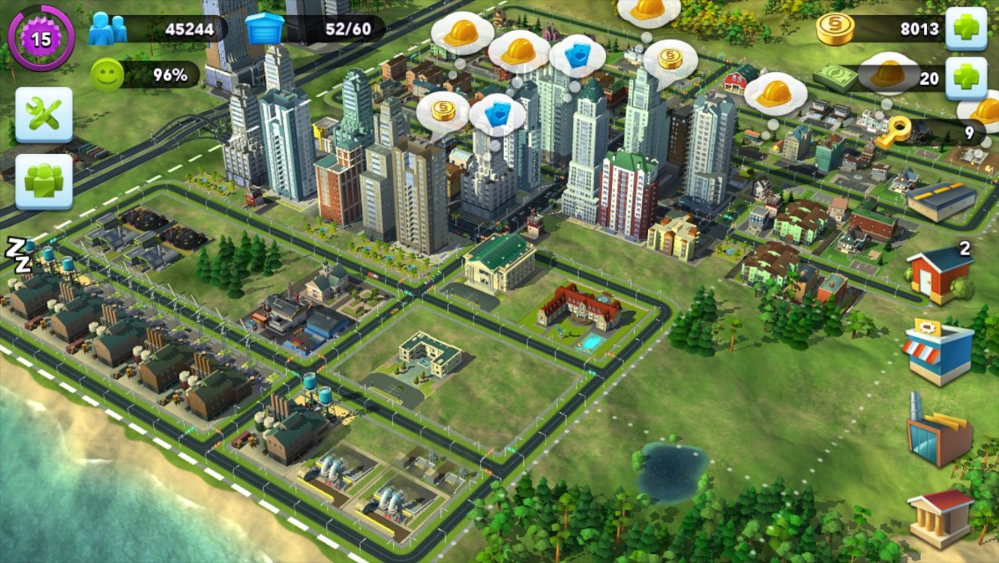
Помните времена, когда трава была зеленее, мобильный интернет помегабайтным, а Apple осваивала непаханые поля смартфоно-игровых ферм? Начало 2010-х было очень интересным временем, когда мобильные студии создавали целые новые жанры, пытались перенести или адаптировать старые концепции и игры, попутно решая задачи, от которой у десктопного разработчика начинал дергаться глаз. Вот и EA решили взять культовые франшизы SimCity и The Sims со всеми их терабайтами ассетов, сложнейшей симуляцией дорог, пробок и отдельных симов, и попробовать затолкнуть это в карман.
В кармане у пользователя тогда лежал условный iPhone 4 или 5 с уже тогда куцым бюджетом оперативной памяти в районе 100–300 МБ на всё про всё, но айфоновладельцы были "платящей" аудиторией, поэтому игровое подразделение метило в основном в них. Как не превратить смартфон в обогреватель и словить ООМ в первые минуты игры? Выкинуть честную симуляцию на помойку, превратить симов в конечные автоматы, а город сделать хитрой иллюзией из текстурных атласов и таймеров. Раскажу немного как устроена SimCity BuildIt с инженерной изнанки, кода почти не будет, да он и не нужен тут для понимания, в конце статьи будет немного грустинки по российскому подразделению EA, и фотки с закрытия офиса в 2016.
Роль питерской студии EA SPB
Когда мы говорим о мобильных SimCity и The Sims, в титрах часто мелькают глобальные бренды вроде EA Tracktwenty (Хельсинки) или Maxis, но большая часть хардкора и инженерной магии ковалась именно в России, силами питерской студии EA SPB (Electronic Arts Saint Petersburg).
Если зарубежные коллеги больше фокусировались на геймдизайне, продуктовых метриках и верхнеуровневой логике, то на долю инженеров из Питера выпала самая интересная и технически важная работа по борьбе со слабым железом и перестройкой технологического фундамента мобильных версий.
Питерская команда отвечала за создание и поддержку внутренних контент-пайплайнов (Internal Tools), и тут делали и развивали тяжелые инструменты сборки, и фактически написали тулы, которые брали «тяжелый» пкшный контент от художников со всего мира, перемалывали его в оптимизированные форматы для iOS и сотен капризных Android-устройств.
Второй задачей было создание гибридных моделей данных, когда надо было сделать так, чтобы мобильный клиент работал плавно, кэшировал данные в офлайне, но при этом бесшовно общался с сервером, передавая данные и отбивался от читеров.
И собственно оптимизация под рынок мобилок, потому что адаптировать игру под один флагманский iPhone, задача и так нетривиальная, ибо даже флагман будет "дохлым", по сравненю со слабым ПК. Еще сложнее было заставить SimCity BuildIt выдавать стабильные FPS на Android/iOS-планшетах, которые за счет большего экрана требовали более детальных текстур, а памяти там было столько же. Поэтому команда ручками, переделывала шейдеры под архитектуру мобилок и буквально по килобайтам вычищала оперативную память, спасая игру от OOM-эшафота. EA SPB создавала ту самую «невидимую» техномагию, благодаря которой франшиза вообще смогла запуститься на смартфонах.
Иллюзия живого мегаполиса
Игра началась с прямого порта ПК-версии SimCity 2013 года, того самого, что похоронил серию новыми механиками. Сделали это, потому что внутренний фреймворк позволял при наличии некоторого опыта, плясок и бубна, собрать мобильную версию. На первой же демке это все и закончилось, ибо это было техническое самоубийство, потому что пк-игра пыталась честно симулировать каждого человечка, который шел на работу, тратил электричество на создание гвоздей и создавал пробки. На мобилке такой подход позволял достичь невиданных 2 фпс и плавил чипсет.
Чтобы игра не превращала телефон в карманный филиал ТЭЦ, архитектуру распилили на два независимых слоя (на самом деле больше, но нам важны два), полностью изменив классический подход к симуляции градостроения.
ПК SimCity (GlassBox):
[Человек] -> [Ищет путь] -> [Просчет логики] -> [Рендер]
Мобильная SimCity BuildIt:
[Серверный Таймер] -> [Проверка условий] -> [Визуальный триггер: спавн машинки]Это сегодня server-authoritative дизайн в мобилках является стандартом, а в далеком 2010м такое разделение было передовым маневром, потому что индустрия только-только нащупала f2p-рельсы. Еще не отойдя от пк-идиом большинство разработчиков по старинке пытались считать всё локально на устройстве, а на сервер скидывали только небольшие json блоки или финальные сейвы.
Поэтому идея тратить реальные, дорогие (на пике интереса к игре обслуживание серверов обходилось порядка 40к$ в сутки) серверные мощности и процессорное время дата-центров на симуляцию виртуальных симов или заводов считалось непозволительной роскошью и глупостью. Для SimСity это было оправдано, и 99% расчетов перенеси на сервер, и убирание чистой математики с мобилок в итоге обошлось дешевле, чем бесконечная борьба с багами, OOM и читерами.
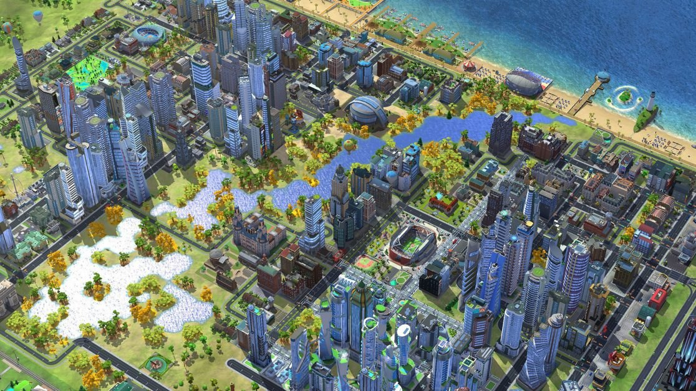
Экономическое ведро
Собственно вся математическая и экономическая сложность была полностью убрана с устройства пользователя на сервера, а так как серверу графика не нужна и он оперирует исключительно связями, ID-шниками и таймерами, то вся сложная экономика вашего города превращается в плоский массив JSON- или key-value подобных таблиц-конфигов со списками координат зданий, уровнями апгрейда, очередями производства и состоянием склада ресурсов.
Все это прекрасно ложится в специализированную базу данных, которая умеет генерировать ивенты по таймерам и когда вы запускаете плавку гвоздя на заводе, всю валидацию и логику делает бэкенд. Игровой клиент фактически обрабатывает нажатие кнопки, отсылая простой json кто и куда нажал, а сервер списывает металл, фиксирует временную метку начала процесса и запускает таймер. Сам процесс «производства» сведен к тиканью серверных часов, и устройству игрока не нужно считать логику здания, логистику рабочих или затрат игрового электричества, ему в принципе уже ничего не нужно кроме моделек 3д зданий и облачков UI.
Смартфон в этой связке превратился в «глупый», но очень красивый терминал, единственная задача которого просто визуализировать цифры от сервера в красивые домики, и локально кэшировать состояние для минимизации сетевого трафика. Интернетов может быть не всегда, и чтобы игра не «заикалась» при плохом 2G-коннекте (а такого было за глаза и выше и средняя скорость обмена с сервером было чтото около 16Кб/мин !не секунды! на клиента) клиент не ждет ответа от сервера на каждый чих и хранит локальную копию состояния города, и даже без связи локальный счетчик времени дотикает и покажет иконку «Готово», вот только нажать вы на неё не сможете.
Забрать этот гвоздь в экономику и потратить его на апгрейд дома без сети не получится, при связи сервер сравнивает текущее системное время с сохраненным и если игрок попытался перевести время на телефоне вперед то откатывает гвоздь обратно, эта фича не работала для китайского рынка из-за проблем с доступом к параметрам устройства, в которые там попадало и локальное время тоже. Но и китайские товарищи играли на отдельных серверах, поэтому проблем особых не было.
[КЛИЕНТ: Нажатие "Крафт"]
|
v (Сетевой запрос: "Хочу гвоздь")
[СЕРВЕР: Валидация ресурсов] ---> [Запись в БД: Начало плавки] ---> [Старт серверного таймера]
|
[КЛИЕНТ: Рисует локальный кэш] <--- (Ответ сервера: "Успешно, жди 5 минут") <--+Рендеринг
Отрисовать сотни зданий на мобильном GPU тех лет уже задача нетривиальная, а чтобы удержать заветные 60 кадров в секунду, или даже 30, на архитектурах уровня ранних чипов Apple или графике Mali/Adreno, пришлось пойти на разные ухищрения в рендере.
Мобильные графические чипы устроены иначе, чем десктопные монстры и они используют архитектуру TBDR (Tile-Based Deferred Rendering). Видеочип не считает весь экран целиком и делит его на маленькие «тайлы» и обрабатывает каждый тайл отдельно. Если вы завалите такой чип хаотичной геометрией со всего города в духе обычной отрисовки пк-билда SimCity, он просто захлебнется, выдавая те самые заветные 2 фпс.
Поэтому мегаполис разбит на жесткие пространственные блоки и вся карта поделена на сектора. Для каждого сектора движок считает расстояние до камеры и угол обзора, если не меняется то создается минитекстура превью, которая позволяет его показывать 2д блиттингом, а не полноценной геометрией, это такой очень агрессивый лодинг получается, который работает тем явнее, чем слабее у вас устройство.
Если же на экране надо отрисовать сложный небоскреб, состоящий из сотен полигонов, кондиционеров на крыше и мелких антенн, то для него отдельно создавалась текстура "со всем", которую можно было натянуть на бокс и теперь уже на экране смартфона этот объект занимает от силы 20 пикселей, игрок не замечает подвоха, а пропускная способность памяти экономится очень сильно. И только если сильно приблизить здание, там начинала отрисовываться реальная геометрия объектов.
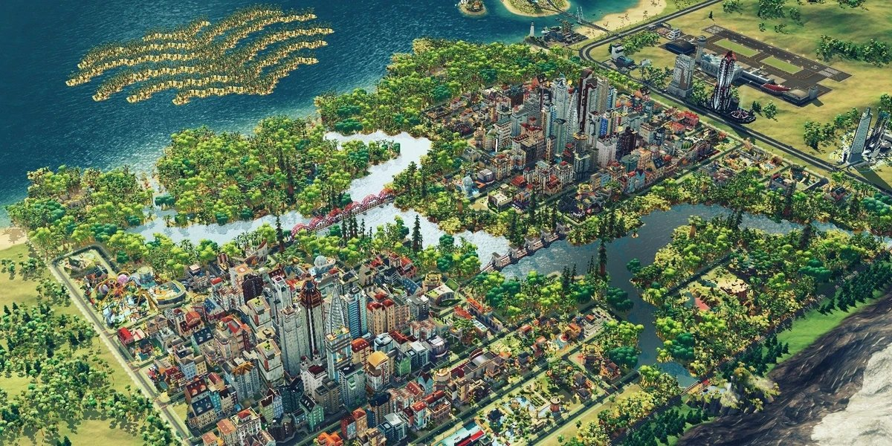
Агрессивный батчинг
Еще одна фишка игры. Если у вас в городе стоит 200 элитных таунхаусов, и движок сделает 200 вызовов Draw Call, то игра если и не превратится в слайд-шоу, то будет очень дерганой. Решением стал тотальный и бескомпромиссный батчинг всего и вся, и когда вы ставите жилые дома или прокладываете дороги, игра не считает их отдельными объектами.
Раз в несколько секунд, обычно когда игрок открывает разные полноэкранные менюхи, движок берет геометрию разных статичных объектов, объединяет их вершины в один гигантский массив вертексов и получает 200 объектов, которые рисуются за 1 проход вместо 200.
Чтобы батчинг работал, объекты должны делить между собой один и тот же графический материал, поэтому художники упаковывали текстуры разных зданий, деревьев и дорожных знаков в текстурные атлас, и у вас было несколько таких атласов для разного набора зданий, потому что собрать геометрию было можно, а вот правильно собрать атлас было проблемой. В итоге все рисовалось одним объектом с одной текстурой, хотя на экране отображалось половина жилого квартала.
Эпоха OpenGL ES 2.0/3.0 была времем жестких ограничений на количество инструкций в пиксельных и вершинных шейдерах и никакого честного рендеринга, глобального освещения или динамических теней в мобильном ситибилдере тех лет быть не могло. Да и зачем заставлять телефон вычислять, как свет от солнца падает на карниз дома, если солнце в игре двигается по жесткому скрипту?
Все тени, мелкие затенения на стыках стен и блики намертво «впекались» в отдельные текстуры здания, и по сути, все здания в игре это заранее разрисованные коробочки, шейдер которых просто выводит готовую картинку без сложных математических расчетов освещения.
Чтобы реализовать смену времени суток без динамических источников света в шейдер закладывался простейший блендинг (смешивание). Здание имело две текстуры - дневную и ночную, где в окнах нарисованы желтые огоньки и шейдер выполнял линейную интерполяцию между ними.
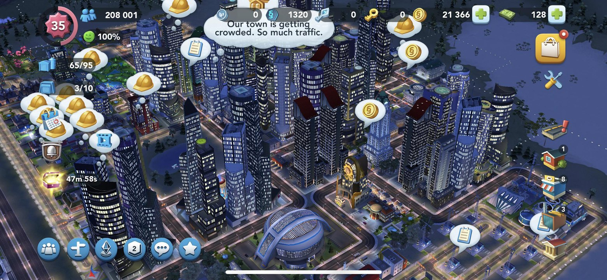
А где симуляция?
Фанаты оригинальных SimCity на ПК (особенно хардкорной SimCity 4 или злополучной SimCity 2013) привыкли к тому, что под капотом игры бьется мощная логика симуляции большого числа систем. Математическое ядро десктопных версий обсчитывало миллионы взаимосвязанных параметров, в SimCity 4 было больше восьми тысяч систем (секция дороги, пожарная станция, машина сима, работающий завод, секция трубы или стойка ЛЭП с областью загрязнения), которые влияли на город и более 10 000 активных объектов на карте, и даже отдельная пожарная машина вносила свою лепту в город, создавая заторы на дорогах.
В SimCity BuildIt всю эту сложную научно-популярную модель просто «занулили» и симуляцию как непрерывный физико-математический процесс полностью вырезали, заменив ее событийно-косметическими триггерами. Настоящая экономика игры превратилась в плоскую систему очередей, таймеров и инкрементов, а чтобы понять масштабы этого непотребства, достаточно посмотреть на пробки.
На ПК движок GlassBox обсчитывал каждого жителя: сим выходил из дома, садился в машину, алгоритм прокладывал маршрут по сетке дорог до его места работы и если на перекрестке скапливалось много реальных физических агентов, возникал затор. Машины вставали, сим не успевал на работу, завод нес убытки, город не получал налоги.
На смартфонах пробки стали чисто визуальным эффектом на основе статистической формулы, привязанный к уровню апгрейда дороги. У каждого тайла дороги было два параметра: Плотность населения в радиусе X и Уровень апгрейда дороги (2 полосы, 4 полосы и т.д.) и если соотношение плотности к ширине дороги превышает некий порог, то срабатывал триггреСПАВНИТЬ_БОЛЬШЕ_КРАСНЫХ_МАШИНОК.
А эти машинки были просто декоративными спрайтами, движущиеся по зацикленному сплайну внутри дорожного тайла. Они никуда не едут, у них нет пункта назначения, и они никак не влияют на экономику завода.
И другой пример, когда при возникновении случайного пожара из депо выезжала физическая пожарная машина. Она искала путь по дорогам, сталкивалась с пробками, тратила время и если застревала, то дом сгорал, превращаясь в руины, которые нужно было сносить бульдозером.
Теперь пожарная станция стал статичным излучателем зоны покрытия с Radius = 10 и при установке здания игра просто проверяет пересечение радиуса с координатами жилых домов. Всем домам внутри радиуса в базе данных присваивается статус is_protected = true, а если дом не в радиусе, то над ним загорается иконка недовольства жителей, блокирующая апгрейд. Физических пожаров на мобилках не бывает, а красивая пожарная машина, которая иногда выезжает из ворот с сиреной просто случайная фоновая анимация, создающая иллюзию бурной деятельности служб.
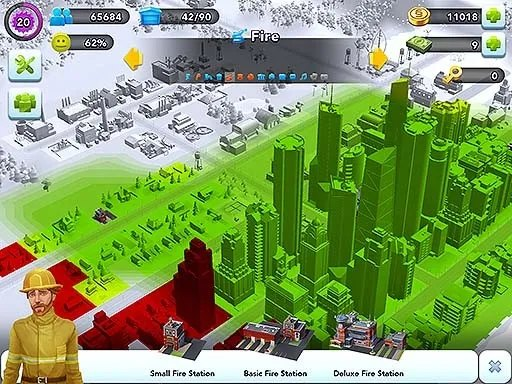
Электричество и водоснабжение
На ПК ресурсы поставлялись по физическим связям и электроэнергия распространялась от электростанции по высоковольтным линиям или от здания к зданию по принципу «соприкосновения зон», а вода текла по трубам, которые нужно было прокладывать и при нехватке мощности дальние районы города оставались без воды или погружались во тьму.
Забудьте про провода и трубы на мобилках, теперь электричество это простейшая задачка на вычитание, когда у города есть глобальный пул энергии с Capacity = 100 и каждый построенный дом тупо потребляет фиксированное количество единиц Demand = 1.
При обновлении сцены игра делает операцию Capacity - Demand и если остаток больше нуля то дом мгновенно «запитан», где бы на карте он ни находился, хоть на противоположном конце от ТЭЦ. Никаких физических сетей, никаких расчетов затухания и потерь как было в пк версии.
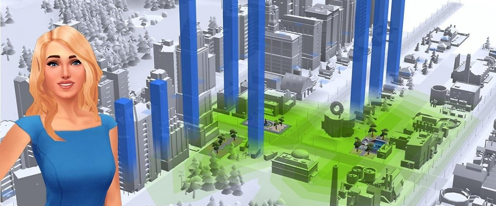
Торговля и мировой рынок
На ПК в SimCity 2013 был глобальный рынок ресурсов, где цены динамически менялись в зависимости от реального спроса и предложения тысяч игроков со всего мира, и были отдельные экономический сервер, которые крутили котировки угля, руды и процессоров. Но мировой рынок в мобильной игре стал завуалированной доской объявлений с жесткими ограничениями и ценовыми коридорами.
Когда кто-то выставлял гвозди на продажу, то сервер не пересчитывал глобальный баланс спроса, потому что работал в пределах группы, куда вы попали при подключении клиента к сети. Можно было выставить цену только в диапазоне, например, от 10 до 80 симолеонов и если за определенное время другой реальный игрок не купил товар, то игра автоматически запускала бота Даниэля, который выкупал ваш лот по средней цене. Это даже не экономический симулятор, а обычная система очередей с гарантированным результатом, замаскированная под живой рынок. Через пять лет игры EA попытались ввести подобие реального игрового рынка, но игроки уже настолько привыкли к упрощенной модели, что его откатили через две недели после запуска.
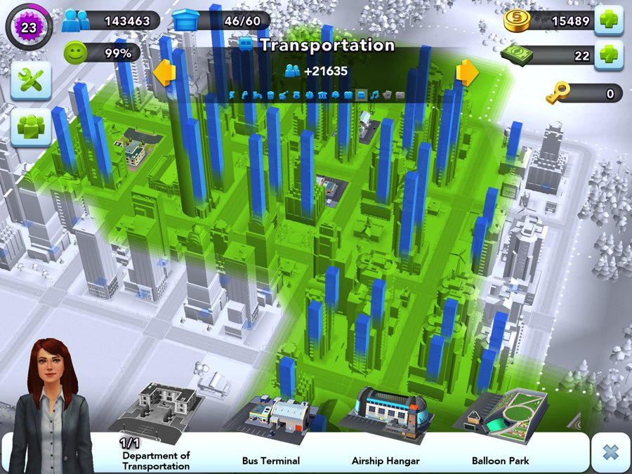
Обещанные фотки
Студия EA St. Petersburg (EA Spb), пожалуй, одна из самых душевных, где мне приходилось работать. Изначально она сформировалась вокруг мобильной разработки и питерский офис занимался оперированием, разработкой и поддержкой разных игр, включая проекты из серий The Sims, Tetris и Star wars, но в первой половине 2010-х годов в рамках реструктуризации EA приняла решение закрыть всю внутреннюю официальную разработку в России.
Помимо Санкт-Петербурга, были еще офисы в Москве и Таганроге. В Москве располагался главный коммерческий и маркетинговый офис для СНГ, которые занимались локализацией, пиаром, и организацией запусков, вроде Battlefield или FIFA и поддержкой игрового сообщества.
Появление EA в Таганроге было удивительной историей успеха регионального IT, и началась с местной аутсорс-компании «Спира» (Spira Computer Software), которые настолько круто делали инженерные задачи и QA для американцев, что в итоге были полностью поглощены EA. В период своего расцвета таганрогский офис насчитывал более 100–150 человек, с контрактниками и тестировщиками цифра приближалась к 200 и для региона это был топовый работодатель с кремниево-долинной культурой. Если собрать вместе все три локации на пике их активности, примерно 2011–2013 годы, получается порядка 250–300 человек.
- EA Spb (Питер): ~70–100 человек (инженегры, художники, продюсеры, QA).
- EA Таганрог: ~150 человек (девопс, веб-разработчики, поддержка).
- EA Москва: ~40 человек (маркетинг, локализация, менеджмент).
Еще был классный мерч вроде брендированных худи, футболок и рюкзаков с булькающими сувенирами внутри, кстати футболка и худи у меня живы до сих пор. Про дружный коллектив, походы в кабак, пятничные традиции и новогодние ивенты как отдельный вид искусства писать не буду, слишком грустно вспоминать. Фотки взяты со страницы Славы "Сopperfeet" Медноногова (copperfeetgames.com), еще одной легенды не только офиса, но и питерской спектрумовской сцены.
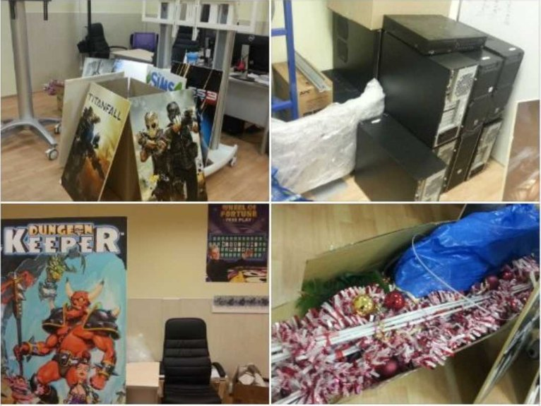
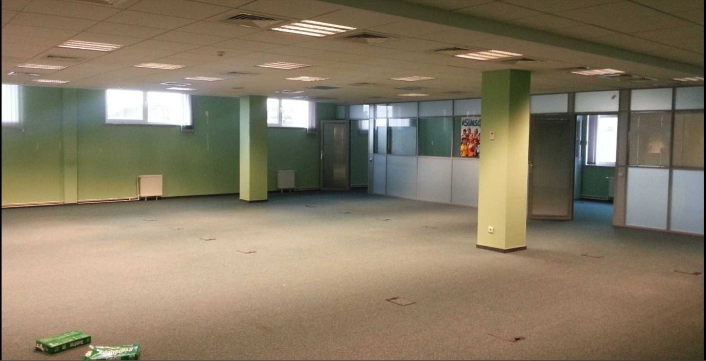
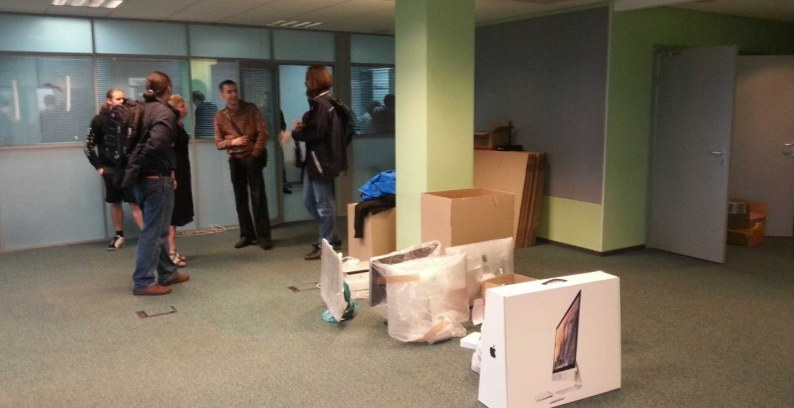
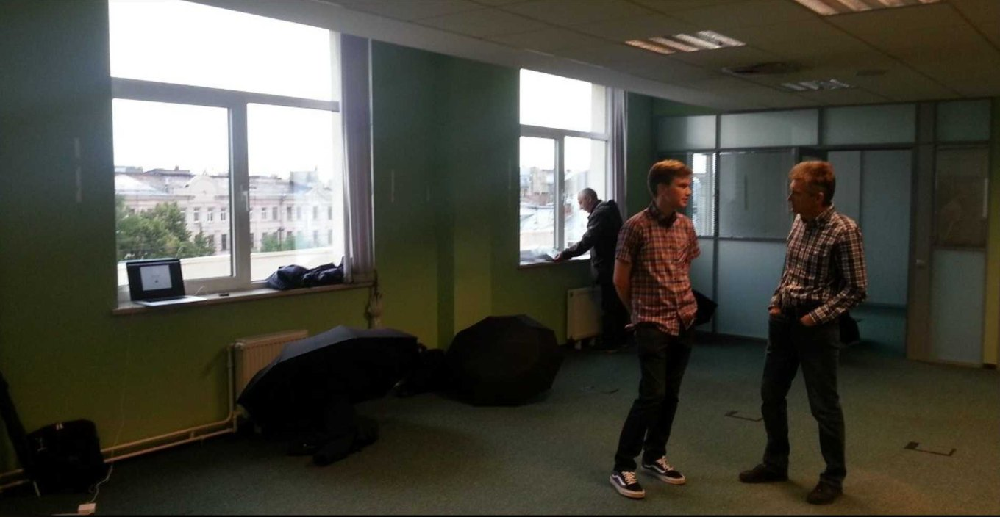
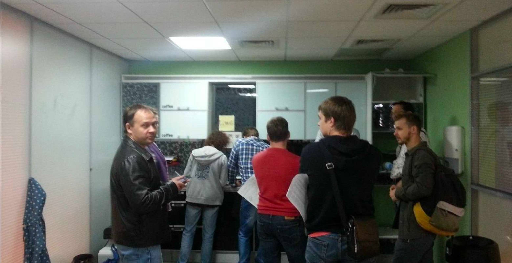
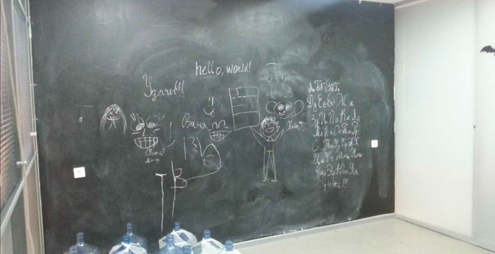
← Все статьи